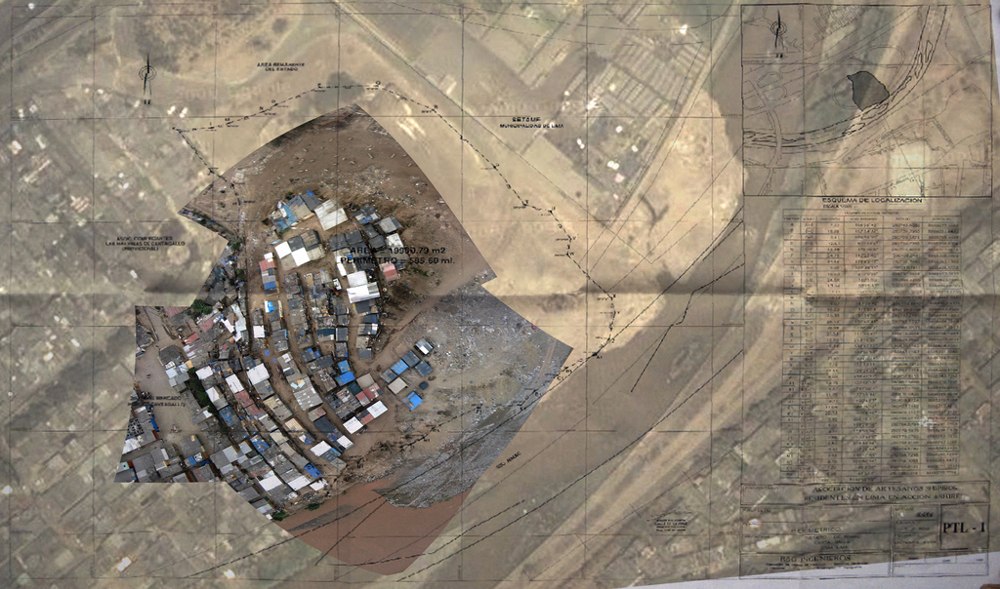

After our sketching activities, we attempted to fly kites, as there was a light breeze. While the students were very assiduous and talented kite flyers, we eventually opted for a balloon flight, which resulted in a complete imaging of the settlement in less than two hours, from about 400 feet. To attempt a faster and more automated stitching technique, I used the open source program hugin and the Autopano-SIFT algorithm to stitch the images together, and overlaid the result on existing Google Maps imagery as well as a copy of the settlement boundaries supplied by one of the community leaders. This was our fastest time yet for the completion of a map, and was the first map -- of any kind - of the settlement.
|

|